Games · spielbar, sammelbar, begehbar · nach dem Revelations-Archiv
Die Spiele
Barkers Universum lässt sich nicht nur lesen und sehen — man kann es spielen, sammeln und betreten: von Undying und Jericho über Sammelkarten und ein Hellraiser-Monopoly bis zu den Mazes der Halloween Horror Nights.
Videospiele
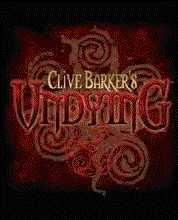
Worum es geht
Zwei große Titel tragen Barkers Namen im Titel: Undying (2001) und Jericho (2007). Davor standen die frühen Nightbreed-Spiele von Ocean, daneben ein Online-Labyrinth für junge Abarat-Leser — und mit Hellraiser: Revival ist das nächste Kapitel angekündigt.
Die Spiele
-
Für Undying überarbeitete Barker ein halbfertiges DreamWorks-Projekt: Er schärfte die Geschichte um die Familie Covenant — mehr Geheimnisse als die Kennedys, nur dunkler —, verpasste dem Helden Namen und Gesicht neu (aus Count Magnus Wolfram wurde Patrick Galloway) und sprach selbst die Rolle des Ambrose. Trotz guter Kritiken blieb der Verkauf schwach; Fortsetzungen kamen nie.
EA / DreamWorks Interactive · 2001
-
Jericho schickte 2007 eine Special-Forces-Einheit mit konventionellen und arkanen Waffen in eine wiederaufgetauchte Wüstenstadt, hinab durch Zeitalter-Kammern bis zum Firstborn — mit Squad-Wechsel als Spielprinzip und einem Soundtrack von Cris Velasco, den Barker selbst auswählte.
Codemasters / MercurySteam · 2007
-
Die Frühgeschichte: Ocean Software brachte 1990 Nightbreed als Action Game und als Interactive Movie mit Filmausschnitten — Teil drei der geplanten Trilogie fiel dem Kinoergebnis des Films zum Opfer.
Ocean Software · 1990
-
Und für die jüngsten Leser steuerte HarperCollins das Online-Spiel The Labyrinth of The Abarat bei: mit dem rotbäuchigen Boot durch ein Piraten-Labyrinth, sechs magische Bücher suchen — sonst macht Christopher Carrion weiter sein finsteres Werk.
HarperCollins / bonus.com · 2004
Aus dem Archiv
Klick vergrößert das Bild
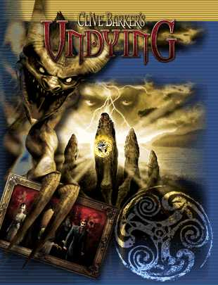
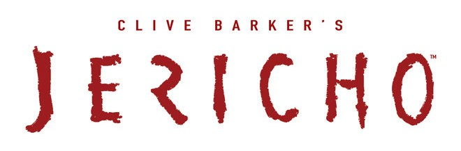
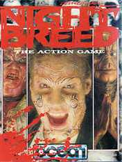
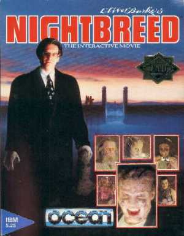
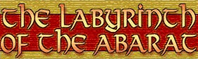
Karten- & Brettspiele
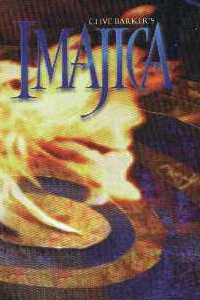
Worum es geht
Vom ambitionierten Sammelkartenspiel zu den fünf Dominions der Imajica über Trading Cards mit Barkers Kunst und Hellraiser-Stills bis zu Kuriositäten wie dem Candyman-Brettspiel und einem inoffiziellen Hellraiser-Monopoly, bei dem Seelen die Währung sind.
Die Spiele
-
Für das Imajica-Sammelkartenspiel schuf Zehrapushu fast 350 Karten mit Künstlern wie H.R. Giger, Eric Dinyer und Ted McKeever — in Absprache mit Barker, der im Regelbuch schrieb, hier werde sein Roman glorreich rückgängig gemacht: Der Zufall, den ein Buch austreibt, sitze im Fall einer Karte wieder im Herzen des Abenteuers. Kurz vor der geplanten In-Ovo-Erweiterung stoppte die Produktion für immer.
Zehrapushu Inc. · 1997
-
Fantaco druckte 1993 fünfzig Trading Cards mit Barkers Artwork — von den Theaterstücken bis Thief of Always, dazu eine signierte Deluxe-Ausgabe mit vier Goldkarten. Eclipse hatte 1992 bereits 108 Hellraiser-Karten aufgelegt, mit Folienkarten und einer superseltenen Autogrammkarte; 2026 legt Fright Rags mit einem neuen Set samt Sketch-Karten von Ashley Laurence nach.
Fantaco 1993 · Eclipse 1992 · Fright Rags 2026
-
Zum Kinostart von Farewell to the Flesh gab es ein Candyman-Brettspiel: Wer die Familienvilla erreicht, lüftet das Geheimnis von Candymans Macht — auf der St. Louis Street setzt man aus, um tote Verwandte zu besuchen.
Promo-Artikel · 1995
-
Das Prunkstück der inoffiziellen Ecke: Brian Sharps handgefertigtes Hellraiser-Monopoly — statt Straßen die Dominien der Hölle, statt Geld Seelen, mit Lament-Configuration- Würfeln und Bronzefiguren. Serie eins: vier Exemplare, Serie zwei: neun.
Brian Sharp · 2002
Aus dem Archiv
Klick vergrößert das Bild
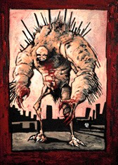
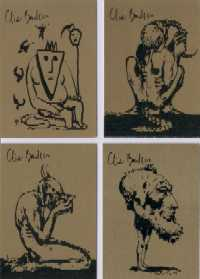
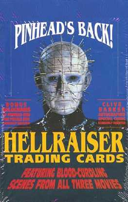
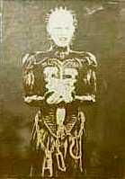
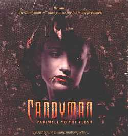
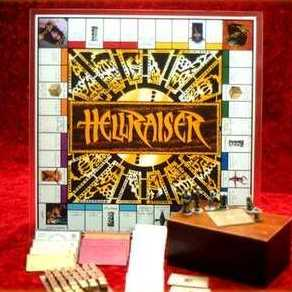
Modelle & Figuren
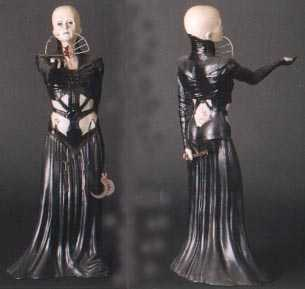
Worum es geht
Von den lizenzierten Modellbausätzen der Screamin'-Reihe bis zu Plüschwesen aus Barkers eigener Bilderwelt: Das Archiv konzentriert sich auf die offiziellen Modelle — samt Stimmen der Bildhauer, die sie geformt haben.
Die Stücke
-
Screamin' brachte zwischen 1989 und 1997 acht Hellraiser-Bausätze heraus — drei Pinheads, Chatterer, Butterball, die Female Cenobite, Doctor Channard und eine Lament Configuration, geformt von Tom Kuntz und Jeff Brower. Barker freute sich öffentlich: Pinhead halte die Aufmerksamkeit ohne Witzeleien und Duschszenen — ein Stück mit Klasse.
Screamin’ Products · 1989–1997
-
Die Jump Tribe entsprang einem fünf Leinwände breiten Gemälde: The Bestiary mit 240 Miniaturwesen. Art Asylum machte daraus Plüschfiguren — jeder „Jumper" von Barker benannt und mit eigener kleiner Geschichte; Yaboo bekam sogar ein eigenes, von Barker geschriebenes und illustriertes Buch.
Art Asylum · 2005
Aus dem Archiv
Klick vergrößert das Bild
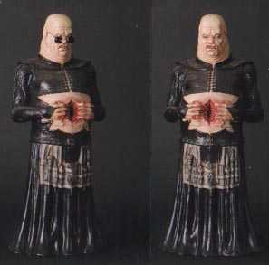
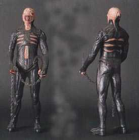
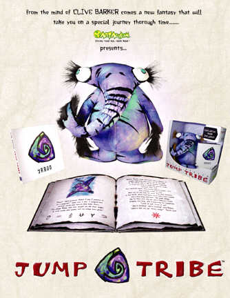
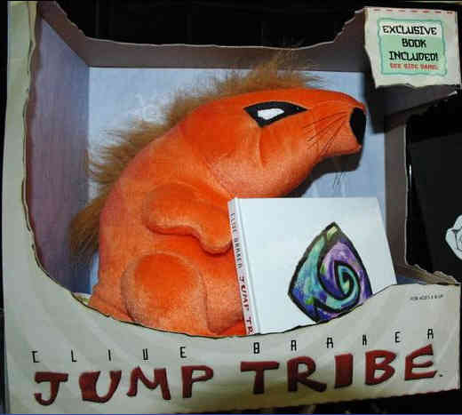
Halloween Horror Nights
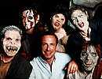
Worum es geht
Drei Jahre in Folge baute Barker für Universals Halloween Horror Nights begehbare Alpträume — vier Minuten Theater in Endlosschleife, wie er es nannte. 2026 kehrt die Mythologie mit einem Hellraiser-Haus zurück — mehr dazu unter Upcoming.
Die Mazes
-
Freakz (1998): zwölf Räume auf einer Soundstage, 35 Darsteller, General Santiago als Führer — Barker schrieb, storyboardete und legte selbst bei den Masken Hand an. Sein Ziel: eine Kunstschau mit Buh-Faktor.
Universal Studios · 1998
-
Hell (1999) profitierte vom Vorjahres-Ruf: Bis zu drei Stunden Wartezeit schlängelten sich durch den Park. Barker verglich die Mazes mit Skulpturen — und zog selbst jedes Jahr mit Freunden los, um die Konkurrenz zu studieren.
Universal Studios · 1999
-
Harvest (2000), angeblich einem echten Albtraum entsprungen: ein zombieverseuchter Friedhof mit tastenden Alien-Tentakeln — sein Job als Maze-Designer sei es, die verstörendste Erfahrung zu liefern, die man geben kann. Die Leute gehen lachend rein, schreien sich die Seele aus dem Leib und kommen breiter lächelnd wieder heraus.
Universal Studios · 2000
-
2026 folgt das Hellraiser Haunted House in Orlando und Hollywood: Der Einstieg führt durch die Lament Configuration in das Labyrinth, alle Cenobiten der ersten beiden Filme laufen frei — und das Team bekam einen handgeschriebenen Brief von Barker, wie spektakulär alles aussehe.
SFX, No 408 · 2026
Aus dem Archiv
Klick vergrößert das Bild
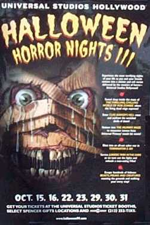
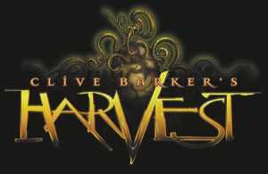
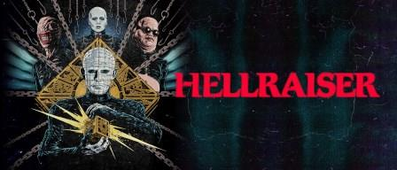
Abbildungen: Revelations-Archiv (clivebarker.info) · Artwork © Clive Barker bzw. der jeweiligen Rechteinhaber